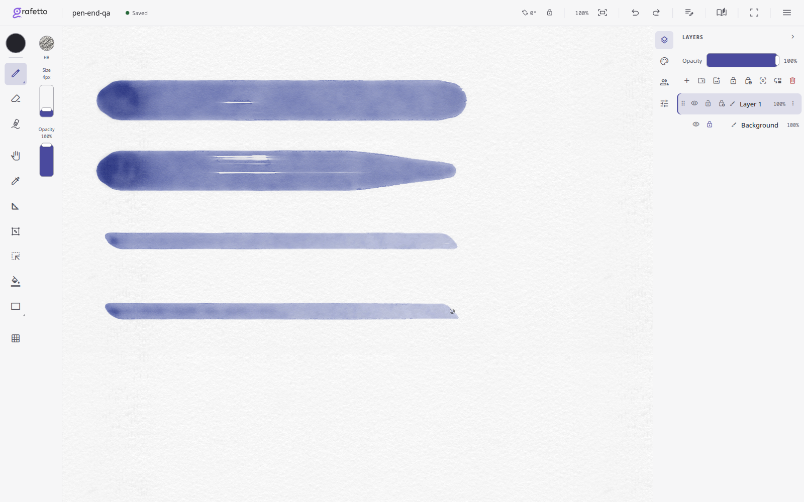
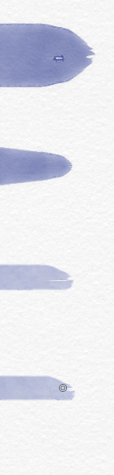
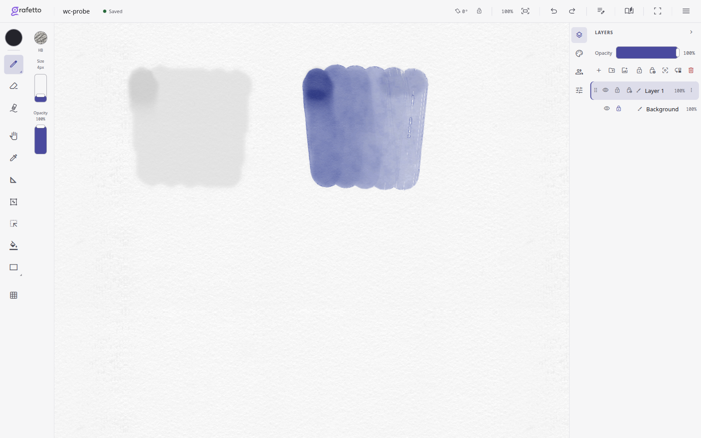
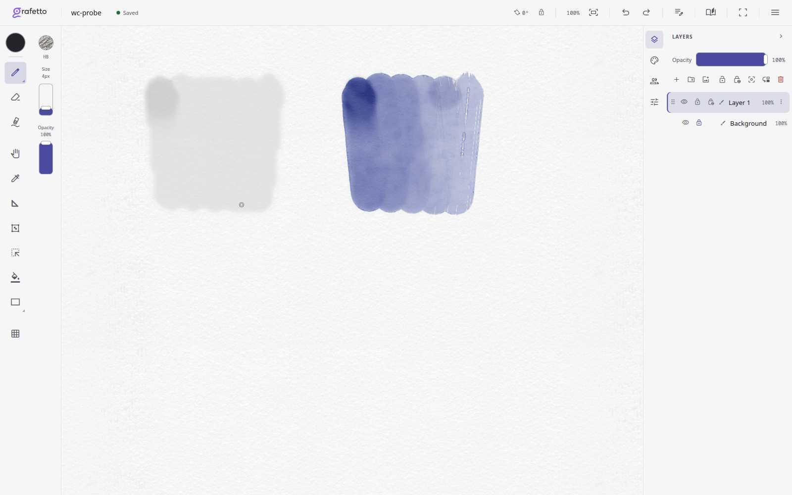

Объединённая версия 5e0d7df7 включает хотфикс Samsung из main. Сухую кисть в этом раунде не меняли.
Короткий хвост предыдущей версии прятался внутри последнего отпечатка. Теперь редкие щетинки выходят за его край, сохраняя сужение. Свежие штрихи: круглая кисть с постоянным и падающим нажимом, затем плоская с постоянным и падающим нажимом.


Избыток пигмента от торможения больше не создаёт дополнительную лужу воды. Доза пигмента сохранена. Слева в каждом снимке — чистая вода, справа — пигмент. Настоящие скопления от посадки и остановки остаются.


1348 тестов, проверка типов, lint и архитектурная карта прошли без ошибок. На Samsung SM-T970 / Adreno 650 все четыре программы поля прошли три компиляции с уникальными исходниками; свежие штрихи и undo/redo работают. Все захваченные программы движка скомпилировались без потери WebGL.